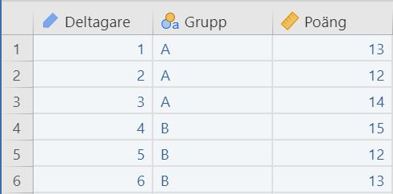
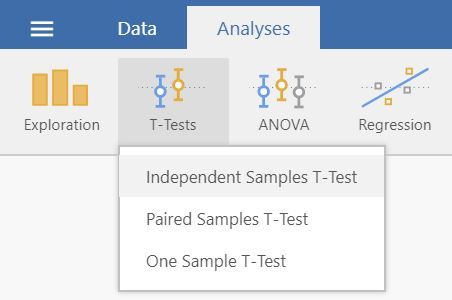
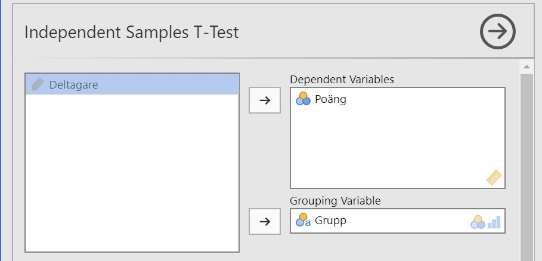
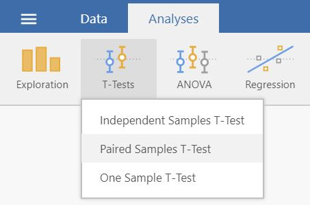
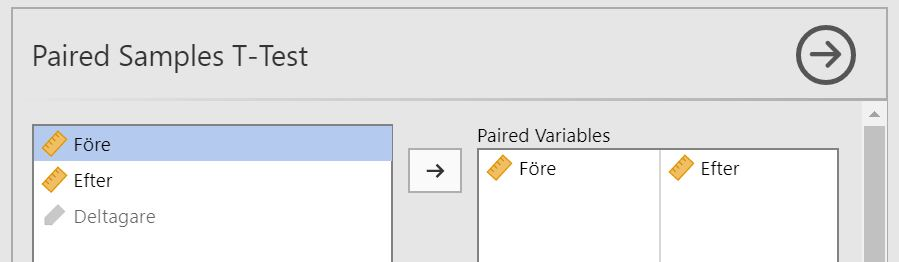
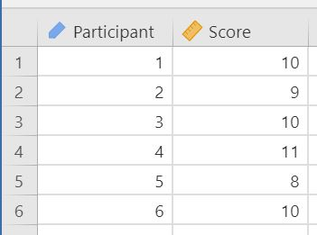
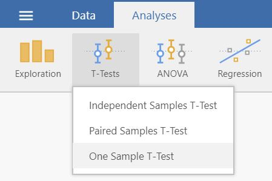
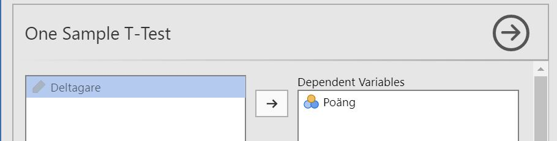
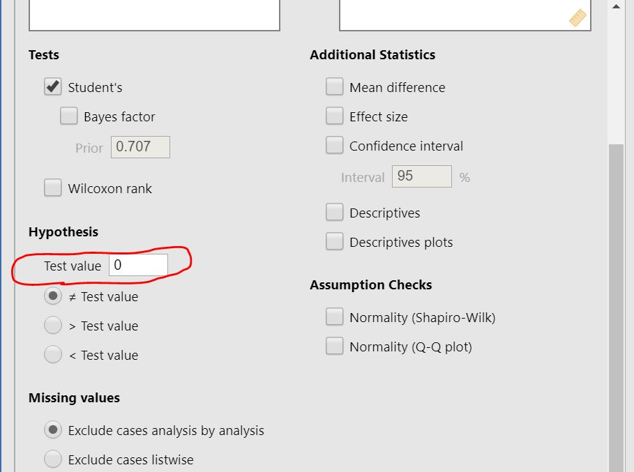

Chapter 3 t-test
This chapter shows how to conduct t-tests using independent samples (3.1), paired samples (3.2) and one-sample (3.3).
3.1 Independent samples t-test
How to perform an independent samples t-test in jamovi:
Check that you have a continous outcome variable and a grouping variable with two levels. This means that your data should look something like this:
Select
Analyses -> T-Tests -> Independent Samples T-Test.
Move your outcome variable to Dependent Variables and your grouping variable to Grouping Variable.
The result is shown in the right panel
3.2 Paired samples t-test
How to perform a paired samples t-test in jamovi:
Check that your have two continuous variables. This means that your data should look something like this:

Select
Analyses -> T-Tests -> Paired Samples T-Test.
Move your outcome variables to Dependent variables.
The result is shown in the right panel
3.3 One-sample t-test
How to perform a one-sample t-test in jamovi:
You need one continuous variable and a mean to test against. Therefore, your data should look something like this:
Select
Analyses -> T-Tests -> One Sample T-Test.
Move your dependent variable to Dependent Variables.
Locate the section Hypothesis further down, this is where you enter the mean you want to test against.
The result is shown in the right panel